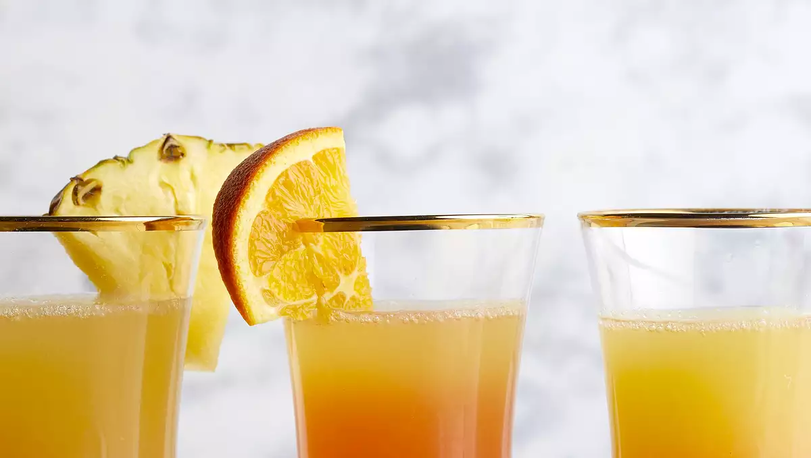

Pineapple Sunrise Mimosas!

Pineapple Sunrise Mimosa!
A delicious tasty drink to enjoy either with your breakfast or later on in your day maybe during a nice sunset. Enjoy this drink with wonderful hints of pineapple,lime and orange!
Ingredients
4 1/2 cups pineapple juice
1 (750 milliliter) bottle Prosecco (Italian sparkling wine)
4 slices pineapple and orange slices, for garnish
Steps
Stir pineapple juice, orange juice, and lime juice together in a large pitcher or punch bowl. Add pineapple, blood orange, and lime slices. Cover; refrigerate 2 to 24 hours.
To serve, pour 1/2 cup juice mixture into each glass or champagne flute. Add 1/4 cup Prosecco per serving. Slowly drizzle in 1 teaspoon Campari. Garnish with a fresh pineapple or orange slice, if desired.
home